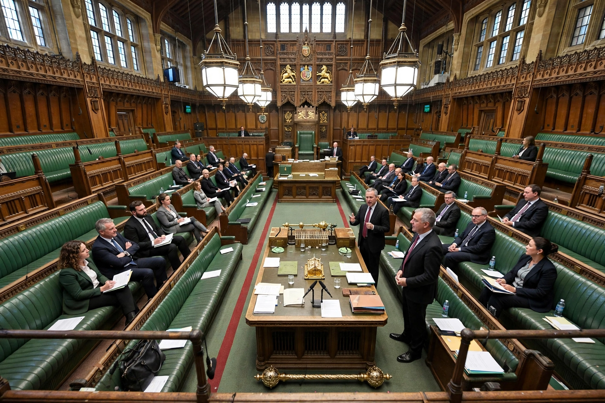

The Leader of His Majesty's Most Loyal Opposition, more commonly referred to as the Leader of the Opposition, is the person who leads the Official Opposition in the United Kingdom. The position is normally held by the leader of the largest party not in government in the House of Commons.

| Leader of the Opposition | |
|---|---|
| Style | The Right Honourable |
| Member of | Privy Council; Shadow Cabinet |
| First holder | William Grenville, 1st Baron Grenville (informal) |
The Leader of the Opposition leads the Shadow Cabinet, questions the Prime Minister at Prime Minister's Questions, and is regarded as a prime minister-in-waiting. The office gained statutory recognition and a salary under the Ministers of the Crown Act 1937.
The term "His Majesty's Opposition" was coined in 1826. Since the Second World War the post has alternated mainly between Conservative and Labour leaders. Following the 2024 general election, Rishi Sunak and then Kemi Badenoch led the Conservative opposition. See Official Opposition and Shadow Cabinet.